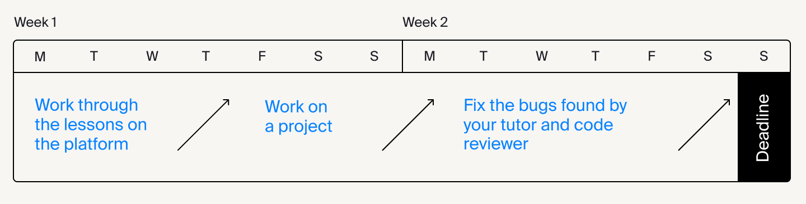

Welcome to Part 1 of the front-end development course. It's made up of two sprints, each of which lasts two weeks. At the end of the sprint you'll have a deadline for submitting your project. This may seem difficult at first, but as you work through the lessons in our platform, you'll learn how to assemble the webpage yourself from scratch. More importantly, you'll master the tools needed to do so.
In the first sprint we'll cover flexbox, BEM, and positioning. You'll learn how to:
- code website blocks that adapt to the size of the browser window;
- change the layout of block-level elements;
- write code that is easy to read and maintain.
Let's learn how to organize the workflow before starting this program. Check out the next lesson.
We recommend doing the bulk of the work in the first week. Work through all the chapters in the interactive platform by Thursday, then complete the project work and send it for review by Sunday.
You can then dedicate the second week to follow-up work. A round of Practicum code reviews takes 24 hours, so you can send off your work and get your results two or three times over the course of a week. That way, you can set yourself a soft deadline.
Working through the tasks in the platform should only take up roughly the first 4 days of the sprint. The remaining time should be spent on practice.
To ensure that you finish everything with plenty of time to spare and that you're not running around like a headless chicken on deadline day, take note of the following guidelines:
- Break up bigger tasks into more manageable chunks. Write out what you need to do step by step and keep track of your progress. Good planning will stop you from overworking yourself. Also, there's nothing like the satisfaction you get from crossing something off your list to give you a sense of achievement.
- Plan some breaks. Work for 25-30 minutes at a time and take breaks in between: stretch your legs, grab a bite to eat, or do some meditation.
- GGet rid of all distractions. Tidy up your workspace, switch off your phone, close the door, put on some headphones. You'll get your work done much quicker if you're completely focused on your task.
It's crucial to plan your time wisely. You won't be able to meet deadlines without that.
Yet, all plans can fall apart if you encounter a problem you can't solve. In the next lesson you'll learn how to keep such things from stopping you.
Being a good programmer doesn't mean that you don't make mistakes. What really makes a great developer above all else is knowing how to find solutions to problems.
It's important to understand that it's totally fine to spend hours, or even days trying to solve what may be a relatively small problem. This is all part of how developers learn and grow. It's much better to work out how to fix something all by yourself rather than simply plugging in a ready-made solution without understanding how it works.
Experienced developers follow these three steps of the Read, Search, Ask approach:
- 1. Read the error text and documentation Go back to the interactive platform and reread the lessons related to your issue. If the problem's on the front end, you can open the webpage in a browser and inspect the relevant elements. If there's something wrong with the script, you'll need to look at the console, where most mistakes are easy to spot.
- 2. Search for a solution online Type your query into a search engine and check the top results. More often than not, you'll find what you need there. Resources like W3 and Mozilla can help because they list out the basics of various coding languages. For more detailed questions, Q&A sites like Stack Overflow and Spectrum are invaluable. If you're having a problem with your code, chances are that somebody else has run into something similar and has already asked for help.
- 3. Ask for help If the first two steps don't help, and you haven't made any progress, you can write in the general chat in Slack. Read about how to ask for help in the next lesson.
You can tell a true professional from a slacker by the way they ask questions. Not only can you determine a developer's level of competence and initiative, the way you formulate your questions will decide how willing and able people will be to help you.
- Ask your question in the appropriate Slack channel and don't DM your tutor Other students often face the same problems as you do, so there's a good chance that they'll be able to help. Even if they can't, they'll also find the answer useful, which is why we make sure that all questions are asked on an open forum. Try thinking of the Slack channels as fountains of knowledge, to which anyone can contribute by asking a good question.
- You need to describe the problem and where exactly it is in the code (specify the line number or line interval) If you don't do this, other students or your tutor will have to. When you get a job, other developers aren't going to spend time sifting through your code. Besides, it's your code, so it's easier for you to navigate. So please be as precise as possible, and people will be more willing to help.
- Describe what you've tried so far to solve your problem It's useful to analyze and then articulate what you've actually done so far and what path you've pursued. When they know what you've already tried and how, other people will be able to zero in on the problem more easily and provide you with a more relevant answer.
- Explain how you believe the code should work step by step In a real job, your mentor, or a senior developer, may ask you to explain what each line of code does. They don't just do this for fun. Going through this process often helps you understand, and you'll end up answering your own question.
- Share the non-working code with CodePen This is the tool every developer uses. CodePen is a great sandbox for experiments with HTML, CSS, and JavaScript. It's also an excellent tool for reducing your code to the bare minimum and sharing it with others. The way it works is that you share your Pen so that other people can quickly open the link, study your code, and offer a solution. We recommend always breaking down the problem into small pieces of code and putting it on CodePen, although you won't always be able to do this. But if you can, consider your problem half-solved.
Whenever you find an error, it's important to consider the following:
- Try to describe the error as clearly and comprehensively as possible.
- Ask yourself if there are any other places in the code where this error might occur.
- Think about how to avoid the error in the future.
- Remember which of the three steps helped you find the solution.
- Going over these points will help you reinforce your knowledge and identify similar bugs more quickly in the future.
All done! Now you know how everything works here. We're just about ready to start the course. But first, we're going to have a quick recap of things you've already learnt. Check out the next lesson.